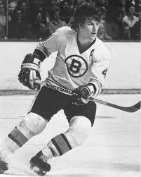

National Hockey League (NHL), organization of professional ice hockey teams in North America, formed in 1917 by four Canadian teams, to which the first U.S. team, the Boston Bruins, was added in 1924.

Wayne Gretzky, in full Wayne Douglas Gretzky, byname the Great One, (born January 26, 1961, Brantford, Ontario, Canada), Canadian ice hockey player who was considered by many to be the greatest player in the history of the National Hockey League (NHL).
Robert Gordon Orr OC (born March 20, 1948) is a Canadian former professional ice hockey player, widely acknowledged as one of the greatest of all time. Orr used his ice skating speed, scoring, and play-making abilities to revolutionize the position of defenceman.
Connor Andrew McDavid (born January 13, 1997) is a Canadian professional ice hockey centre and captain of the Edmonton Oilers of the National Hockey League (NHL). The Oilers selected him first overall in the 2015 NHL Entry Draft. McDavid spent his childhood playing ice hockey against older children.